第十三章 学术规范与伦理
从提出问题、检索文献、获取和清洗数据，到建模、可视化与解释结果，研究过程中的每一步都包含选择。学术规范与研究伦理所关心的，正是这些选择是否诚实、透明、可追溯，是否尊重研究参与者，是否使他人能够判断证据的可信程度。因此，规范与伦理并不是论文定稿前才检查的格式要求，而是贯穿研究全生命周期的质量控制系统。
本章将依次回答五个问题：哪些行为属于学术不端；引用、署名和成果发表怎样做到恰当；涉及人的研究如何保护参与者及其数据；生成式人工智能可以在哪些环节提供帮助、责任边界在哪里；发现错误或风险之后应当如何处理。学习这些内容的目标不是背诵一份“禁止事项清单”，而是形成一种能够在具体情境中识别风险、说明理由并留下证据的判断能力。
13.1 学术规范为什么是研究的基础设施
从“案例很多”转向“风险在哪里”
有关科研失信的报道常以人物、机构、数量和处罚作为叙事中心。相关资料的开篇把一位研究人员的肖像与一张案例汇总表并置，表格按曝光时间、涉及人员和问题类型排列了多起事件。这样的画面首先传达出两个信息：失范行为并不限于某一学科，也不只有“抄袭”一种形式；问题既可能发生在文献、数据和图像中，也可能发生在署名、同行评议、伦理审批和成果发表环节。
不过，案例表只能作为风险提示，不能代替事实核验。新闻报道中的“质疑”、期刊的“撤稿”和有权机构认定的“学术不端”不是同一概念。未经调查结论支持，不宜依据网络汇总表对个人作出判断，也不应把所有撤稿都等同于故意造假。研究者真正需要追问的是：证据链在哪个环节断裂了，谁应当对该环节负责，哪些记录可以还原当时的研究决策。
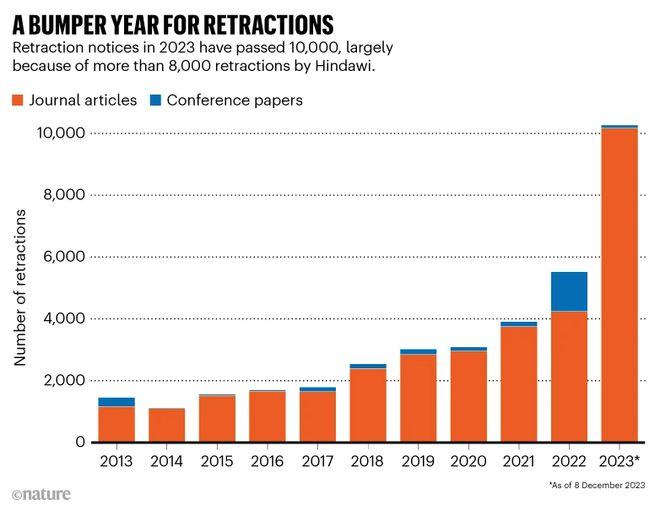
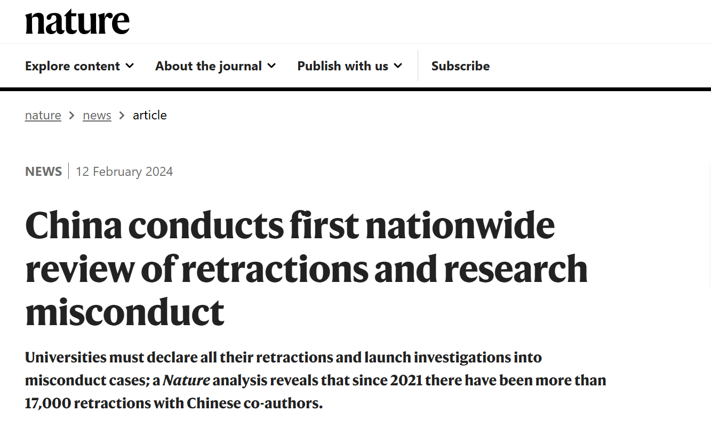
2023年全球撤稿记录超过一万篇，其中某出版集团的大规模撤稿是增长的重要来源；报道同时明确指出，诚实错误也可能导致撤稿。2024年关于中国开展全国性审查的报道，则显示治理重点从被动处理个案转向汇总撤稿原因、调查可能涉及失信的情形。由此可见，科研诚信评价需要两个互补视角：一方面检查单篇成果中的证据，另一方面检查研究组织、期刊流程和激励机制是否能够预防并纠正错误。相关数据和报道会随时间变化，引用时应标明统计范围与日期，并核对原始撤稿声明。《Nature》关于2023年撤稿记录的报道；《Nature》关于2024年全国性审查的报道
区分错误、争议、撤稿与学术不端
研究结论后来被推翻，并不自动证明原作者不诚实。知识本来就可能随着新证据而修正。评价一个问题时，应分别判断“成果现在是否可靠”和“研究者当时是否违反规范”。前者关注证据状态，后者还需要考察行为、责任和主观过错。
| 概念 | 核心含义 | 典型处理 | 判断时不能省略的问题 |
|---|---|---|---|
| 诚实错误 | 在合理工作过程中发生计算、编码、录入或判断错误，研究者没有故意隐瞒 | 更正、补充说明；错误足以使结论失效时撤稿 | 发现后是否及时报告，原始记录是否保留，影响范围是否查清 |
| 学术争议 | 对理论、方法或解释存在可论证的分歧 | 复核、回应、重复研究或公开讨论 | 分歧是证据不足，还是存在虚假陈述 |
| 更正 | 论文部分信息有误，但主要结论仍可成立 | 发布与原文双向链接的更正说明 | 更正是否清楚指出错误位置、原因与改后内容 |
| 撤稿 | 论文整体或关键结论不再可靠，或出版过程存在严重问题 | 发布撤稿声明并保留原文标识 | 撤稿原因是什么，涉及诚实错误、失信行为还是出版管理问题 |
| 学术不端或科研失信 | 伪造、篡改、剽窃等违反科研诚信要求的行为 | 依证据、程序和适用规则调查处理 | 谁实施了什么行为，证据是什么，责任如何划分，是否给予陈述申辩机会 |
期刊更正与撤稿制度的目的首先是校正学术记录，而不是简单“删除一篇文章”。以《Nature》的政策为例，更正或撤稿说明会与原文保持链接，以便读者了解记录发生了怎样的变化。对研究者而言，主动纠错不是失败的同义词；隐瞒已知错误、破坏记录或阻碍核查才会进一步损害可信度。《Nature》更正与撤稿政策
13.2 从原则、标准到具体责任
三个相互关联但不可互换的层次
“学术规范”“研究伦理”和“法律制度”经常同时出现。三者有交叉，却回答不同问题。
- 学术规范要求研究过程符合共同体认可的专业准则，例如如实记录数据、准确引用、恰当署名、避免一稿多投。
- 研究伦理关注研究活动对人、动物、群体与社会可能造成的影响，强调尊重、自主、有利、不伤害、公正和隐私保护。
- 法律与机构制度规定最低义务、审批程序、调查权限和责任后果，例如个人信息保护、著作权、人体研究伦理审查和科研失信调查规则。
一种做法“没有明确违法”，并不代表它符合研究伦理；已经通过伦理审查，也不意味着后续数据处理可以任意变化；论文格式正确，更不意味着研究数据真实。稳健的研究必须同时通过这三个层次的检查。
从抽象原则落实为可检查的过程
研究活动可以用六项原则进行自检：遵守适用法律与制度；尊重事实和证据；保持严谨并允许复核；公开、公平地说明方法与利益关系；尊重他人的贡献和权益；有经验的研究者对团队成员承担指导与示范责任。原则只有进入工作流程才会发挥作用，例如“尊重事实”要落实为保存原始记录，“公开公平”要落实为披露利益冲突，“尊重贡献”要落实为署名协商和贡献声明。
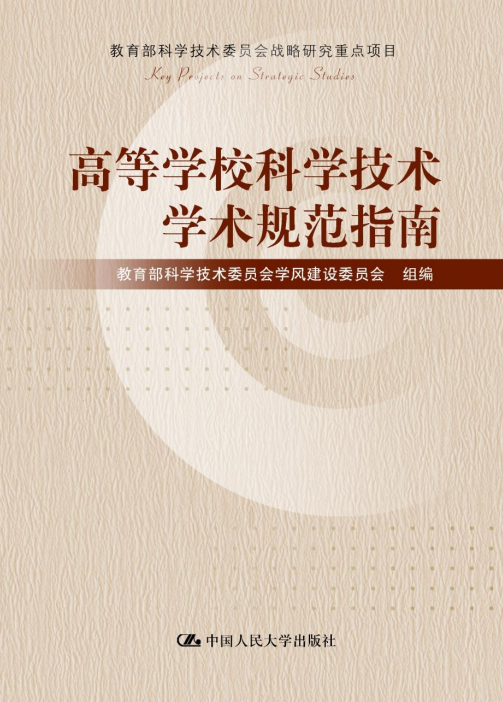
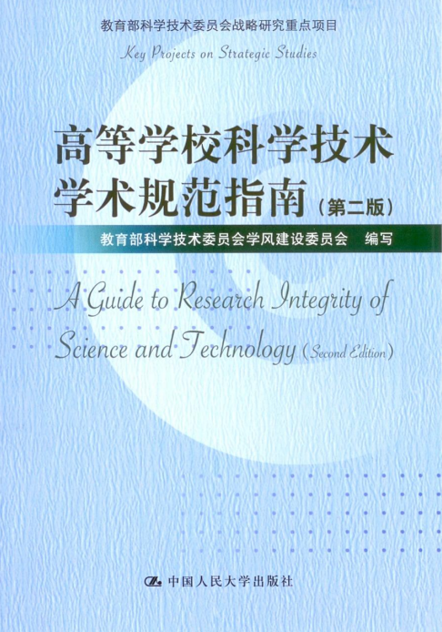
我国出版行业标准CY/T 174—2019将学术不端划分为剽窃、伪造、篡改、不当署名、一稿多投、重复发表、违背研究伦理和其他学术不端等类型。2022年发布的《科研失信行为调查处理规则》进一步规定了调查范围、职责分工与处理程序。二者可以帮助研究者建立风险分类，但具体事件仍须依据行为发生时适用的法律、政策、学科规范和机构制度判断。CY/T 174—2019标准信息；《科研失信行为调查处理规则》
13.3 识别八类常见学术不端
| 类型 | 核心问题 | 常见表现 | 预防与核查 |
|---|---|---|---|
| 剽窃 | 把他人的智力成果呈现为自己的成果 | 未注明来源使用观点、文字、数据、图像、方法或未公开成果；改写措辞但保留独特结构而不归因 | 阅读时同步记录来源和页码；区分直接引语、转述与自己的判断；复用图表前核对许可 |
| 伪造 | 创造实际上不存在的研究材料或事实 | 编造数据、样本、访谈、图像、实验过程、结论、证明材料、基金信息或同行评议人信息 | 保存原始数据和采集日志；让样本、工具、时间与文件相互对应；对异常完整的数据保持警惕 |
| 篡改 | 不当改变真实材料，使其支持预期结论 | 选择性删改记录或数据；拼接、移动、增强、模糊图像；改变引文原意 | 预先定义排除规则；保留处理前后的文件与脚本；完整报告敏感性分析和不利结果 |
| 不当署名 | 署名与实际贡献、同意或责任不匹配 | 排除重要贡献者，加入无实质贡献者，未经同意列名，排序与约定不符，虚构单位或资历 | 研究初期讨论贡献；阶段性更新；投稿前逐人确认署名、顺序、单位和责任 |
| 一稿多投 | 同一或实质相同稿件同时进入多个出版流程 | 同时投给不同期刊；未完成正式撤稿便另投 | 保留投稿状态；需改投时先按期刊流程撤回并获得确认 |
| 重复发表 | 把已经发表的内容再次作为新成果 | 未披露复用自己的文字或数据；拼接旧文；把同一研究切成最低可发表单元；合作方各自发表同一结果 | 说明与既有成果的关系；引用自己的相关成果；明确新增问题、数据和分析 |
| 违背研究伦理 | 未充分保护参与者或未履行应有审查 | 未经必要审批，超范围实施，知情同意不足，伤害参与者，泄露隐私，隐瞒利益冲突 | 在招募或采集前完成判断与审批；按批准方案执行；变更先报批；建立事件报告机制 |
| 其他学术不端 | 破坏评价、公平或学术记录的其他行为 | 未阅读原文却列入参考文献，把转引写成直接引用，干扰同行评议，请有利益关系者评审，买卖论文或由第三方代写代投 | 保存检索与阅读记录；披露帮助、数据、资助和利益关系；不外包核心学术责任 |
剽窃不仅是复制文字
剽窃的对象可以是思想、数据、图像、音视频、研究方法、文字表达、整体结构或尚未公开的成果。只把句子中的词语换成近义词，如果仍然沿用原作者独特的论证路径、例证组合或分类框架而不说明来源，仍然可能构成不当占用。相反，规范转述不是简单“降重”，而是先理解原意，再用适合当前论证的语言重述，并明确归因。
判断是否需要引用，可以使用一个简便标准：如果读者可能合理地问“这个事实、观点、材料或做法从哪里来”，就应当给出能够回到来源的线索。通识性事实可以不逐条引用，但“是否属于常识”取决于读者、学科和语境；拿不准时，引用通常比省略更稳妥。
伪造、篡改与合理的数据处理
伪造是创造不存在的证据，篡改是不当改变已有证据。二者与合理的数据清洗、图像调整并非只相差一个软件操作，而是相差三个条件：是否有正当分析目的，是否一致地执行预定规则，是否透明保留并报告处理过程。
例如，发现问卷中存在无法解析的字符，可以按预先确定的缺失值规则处理；为了让结果“更显著”而删除不利观察，则属于严重风险。对显微或扫描图像进行统一亮度调整，若不改变组间差异且完整说明，可能是合规的呈现处理；只选择某一区域增强、遮盖背景或把不同实验片段拼成看似连续的结果，则可能误导读者。第十章所强调的“原始层—处理层—分析层”分离，在这里不仅是数据管理技术，也是诚信保障。
重复发表与合理的成果延伸
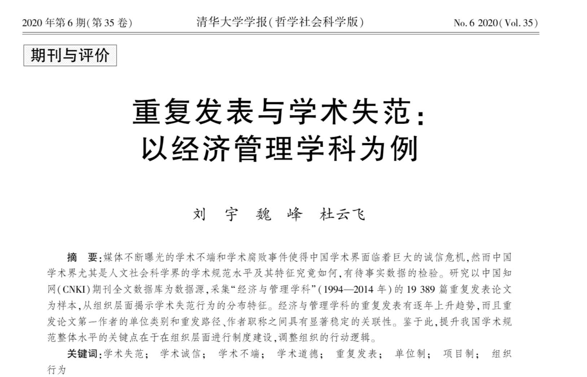
使用同一数据集回答不同问题并非当然不当；综述、方法论文、预注册报告、会议摘要与完整论文之间也可能存在合理承接。判断边界时应回答四个问题：新稿提出了什么不同问题；新增了哪些数据、分析或解释；读者能否清楚看到与既有成果的重叠；期刊是否允许这种发表关系。隐瞒重叠、把同一研究过度切分或让同一批数据看起来像相互独立的证据，会扭曲知识积累和证据综合。
13.4 引用、注释与参考文献：让知识来源可追溯
引用不是装饰，而是证据接口
引用至少承担四项功能：承认他人的贡献；说明一个事实或观点的证据来源；让读者复核原文；标示当前论证与已有研究的关系。只有在正文中明确指出“哪一句话由哪一项来源支持”，参考文献表才真正发挥作用。把大量文献统一堆在段末，却不说明它们分别支持什么，仍会降低可核查性。
| 使用方式 | 正文应当怎样处理 | 还要核对什么 |
|---|---|---|
| 直接引用原句 | 使用引号或独立引文格式，标明作者、年份并按体例提供页码或定位信息 | 引文是否准确，是否断章取义，篇幅是否必要 |
| 转述观点 | 用自己的语言准确概括并给出来源 | 是否真正理解原意，是否把原作者的推测写成事实 |
| 使用数据或量表 | 说明数据、变量或工具来源；必要时引用原始开发与验证文献 | 使用许可、适用人群、版本、计分方式和改编过程 |
| 复用或改编图表 | 在图注中说明“转载”或“改编自”并给出来源 | 著作权、开放许可或书面授权是否允许当前用途 |
| 二手转引 | 尽量查找原文；确实无法获取时清楚说明转引关系 | 二手文献是否准确表达原文，不能把未读原文列成自己直接核验过的来源 |
| 使用未公开材料 | 获得材料提供者和相关权利人的许可，并说明材料性质 | 保密约定、匿名要求、知识产权和发表优先权 |
一条可靠的文献记录怎样形成
文献进入参考文献表之前，应经过“检索到—实际阅读—判断相关—进入论证—核对书目信息”五个环节。只因为其他论文引用了某文献，或因为生成式人工智能给出了一个题名，就把它列入参考文献，会形成“引用了但没有读”的虚假证据链。理想的阅读记录至少保留：可验证的题名与标识符、获取地址、阅读日期、支持哪一项论断、关键页码或表图位置、自己的评注。
项目申请同样需要遵守引用规范。检索新颖性时应如实报告相关成果，不能有意回避不利文献；申请书中的前期基础、研究条件和团队能力必须可以核验。项目实施中，如果研究问题、样本、方法或风险发生实质变化，应保留变更理由，并按资助方、机构或伦理审查要求履行报告或审批程序。
13.5 署名不是奖励，而是贡献与责任的公开声明
谁可以署名
论文署名应同时考虑实质贡献、稿件审阅、发表同意和责任承担。只提供行政职位、一般性资源或礼节性帮助，通常不足以自动获得作者身份；确有帮助但未达到作者标准者，可以在获得同意后列入致谢。反过来，参与研究设计、关键数据获取或分析、核心写作并承担责任的人，不应被无故排除。
ICMJE把作者资格与贡献、审阅、最终批准和问责联系在一起；CRediT则用14种角色描述贡献，例如概念化、方法、软件、数据整理、正式分析、可视化、写作、监督和经费获取。CRediT的作用是提高透明度，它本身不自动决定谁符合某一期刊的作者标准。研究团队应同时核对目标期刊和所属机构的具体要求。ICMJE作者与贡献者建议；CRediT贡献角色分类
| 研究阶段 | 可记录的贡献 | 适合保留的证据 |
|---|---|---|
| 问题与设计 | 概念化、方法设计、研究方案、伦理材料 | 版本化方案、会议纪要、审批文件 |
| 数据工作 | 调查实施、访谈、实验、资料获取、数据整理 | 招募与采集日志、数据字典、清洗记录 |
| 分析与验证 | 软件、正式分析、结果复核、可重复性验证 | 脚本、运行环境、核查清单、复现报告 |
| 表达与发表 | 可视化、初稿写作、审阅修改、投稿沟通 | 文稿版本、修改记录、作者确认邮件 |
| 组织与支持 | 项目管理、监督、资源、经费获取 | 任务分工、资助信息、利益冲突声明 |
署名讨论不应拖到投稿前。研究启动时先约定原则，任务变化后更新贡献表，投稿前逐位确认作者名单、顺序、单位、贡献说明、利益冲突和最终文本。作者顺序在不同学科含义不同，因此“按贡献排序”“共同第一作者”或“通讯作者”的约定应写清楚，不能依赖事后猜测。
第三方服务不能接管研究责任
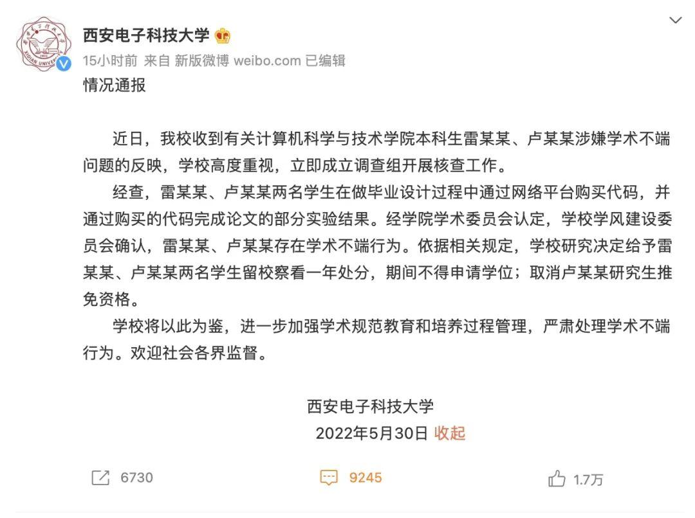
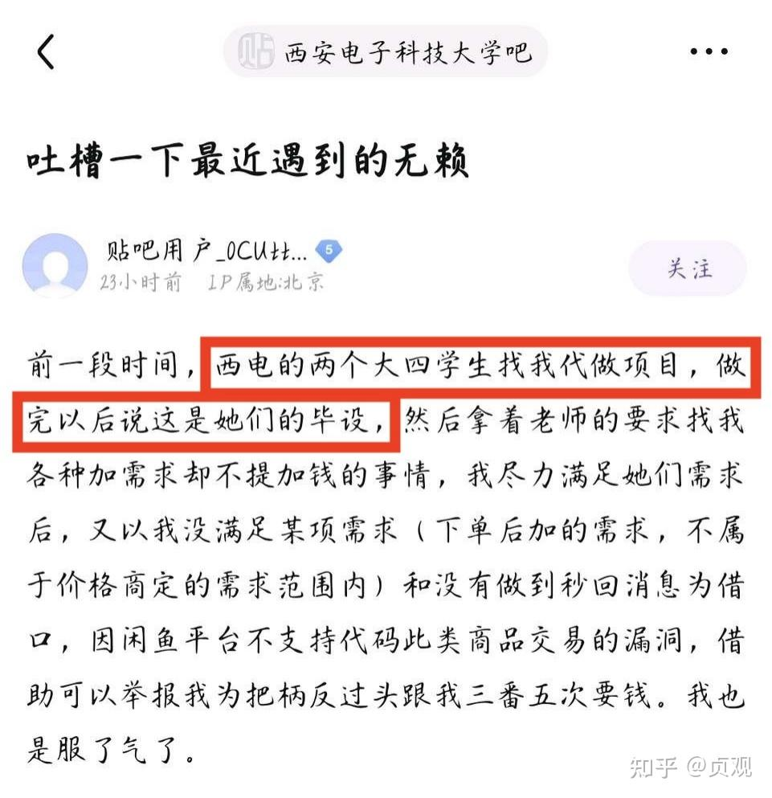
使用统计咨询、语言润色、转录、绘图或云计算服务时，应事先界定边界：服务方接触哪些数据，是否签署保密与数据处理约定，产出是否需要披露，研究者能否解释每一步，谁负责核验。即使代码由团队成员或服务商编写，署名作者仍要对进入论文的数据、方法和结论承担责任。购买论文、数据、实验结果、代码输出或同行评议意见，则直接破坏了贡献与责任的对应关系。
13.6 把诚信嵌入研究全流程
申请、实施与发表是同一条证据链
研究开始前，应如实说明前期基础、研究条件、创新点和潜在利益关系；实施过程中，要按方案保留记录，不得随意改变样本、变量、分析或图像；发表时，则应完整说明方法、限制、作者贡献、资助和数据可得性。三个阶段相互制约：申请书中承诺的样本与方法应能在实施记录中找到，实施记录又应能解释论文中的表格、图形和结论。
| 阶段 | 关键问题 | 最低记录 |
|---|---|---|
| 选题与检索 | 是否如实识别相近成果和不利证据 | 检索式、检索日期、纳排记录、研究空白说明 |
| 方案与申请 | 问题、样本、方法、预算和团队能力是否真实可行 | 方案版本、任务分工、利益冲突、必要的伦理材料 |
| 数据获取 | 数据是否来自声明的对象与过程，是否超出同意和审批范围 | 招募、同意、采集日志、原始文件校验值 |
| 数据处理 | 删除、修改、合并、编码是否有规则和痕迹 | 数据字典、清洗日志、脚本、排除清单 |
| 分析解释 | 模型选择是否受结果驱动，是否报告不确定性与反例 | 分析计划、环境版本、诊断结果、替代模型 |
| 写作与可视化 | 引用、数字、图像和措辞是否准确，是否夸大结论 | 文稿版本、图表数据源、引用核验记录 |
| 署名与投稿 | 作者、贡献、利益冲突和稿件状态是否透明 | 作者确认、贡献声明、投稿与撤稿往来 |
| 发表之后 | 数据和材料能否按承诺保存；发现问题能否及时纠正 | 保存期限、访问记录、更正或事件报告 |
机构规则具体到行为、程序与后果
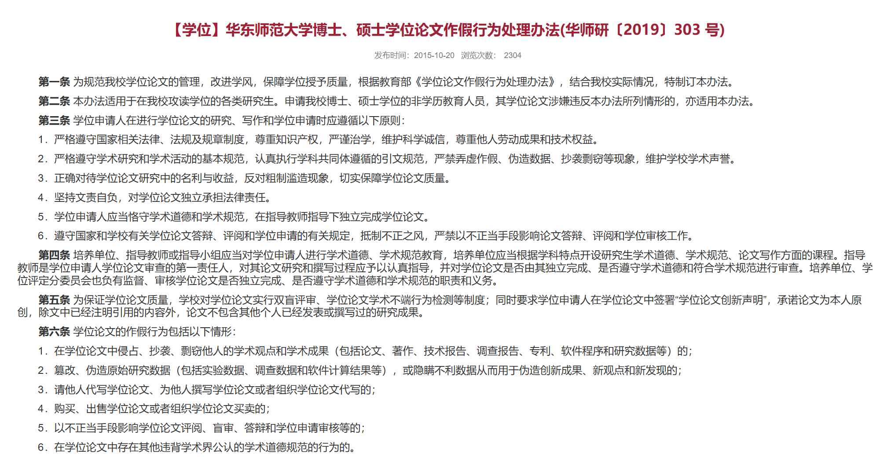
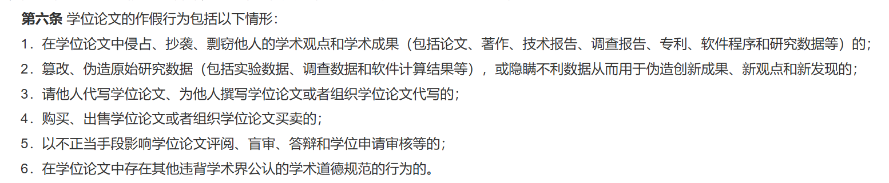
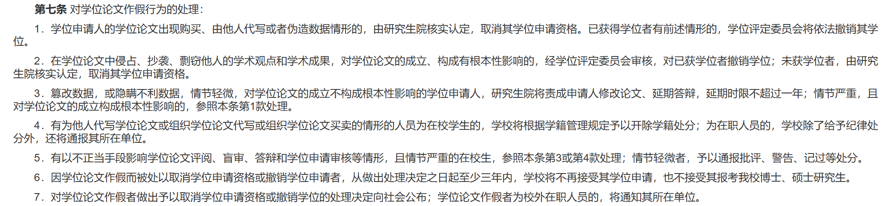
制度的意义不只是规定处罚，还应回答“出现问题后由谁受理、如何保存证据、如何保护举报人与被调查人的合法权益、怎样避免利益冲突、如何陈述申辩和复核”。研究者不要只在发生争议后才查制度。项目开始时就应找到本单位的科研诚信、学位论文、伦理审查、数据安全、生成式人工智能使用和利益冲突文件，并记录版本与适用范围。
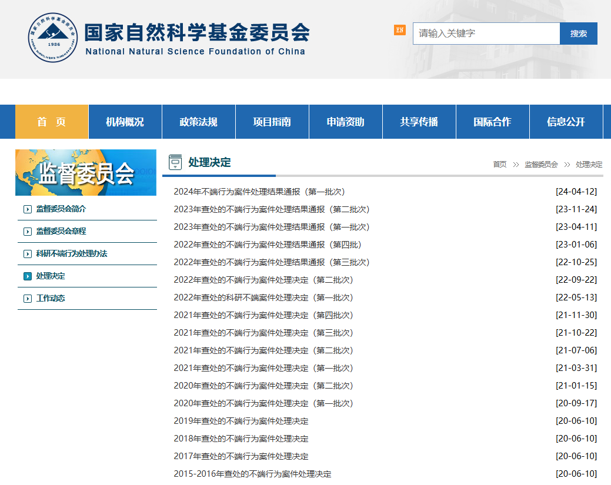
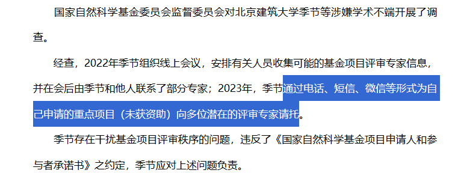
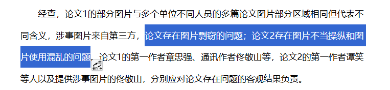
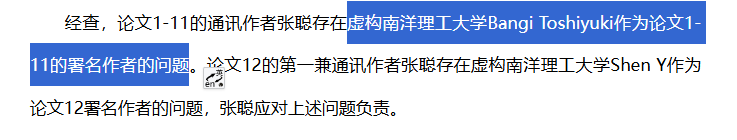
同组案例摘录还展示了另外几种风险：不当接触或影响评审人，把他人或既有图像作为本研究结果，患者数据管理与审批不一致，申请书内容挪用，虚构作者或单位，编造实验数据。这些行为表面上分散，实质上都破坏了“主张—证据—责任人”之间的对应关系。预防它们最有效的办法不是在结题时补文件，而是在研究发生时建立可核验的记录。
13.7 人体参与者与教育数据伦理
伦理审查不是一张通行证
教育研究常涉及学生、教师、家长或管理者，数据可能来自问卷、访谈、观察、测验、学习平台日志、课堂录音录像和行政记录。研究风险不一定表现为身体伤害，也可能表现为隐私泄露、污名化、心理压力、不公平评价、师生权力关系中的被迫参与，或数据在原定目的之外被再次使用。
伦理审查应当发生在招募和数据采集之前。它要判断研究价值与风险是否相称、参与者是否能够自由决定、弱势群体是否得到额外保护、数据管理是否安全。获得批准后，研究者仍必须按批准的方案实施；如果研究对象、招募方式、数据字段、共享范围或风险发生实质变化，应先判断是否需要提交变更，而不是事后补说明。
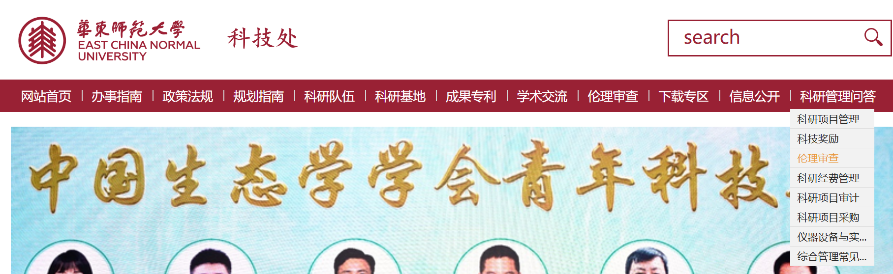
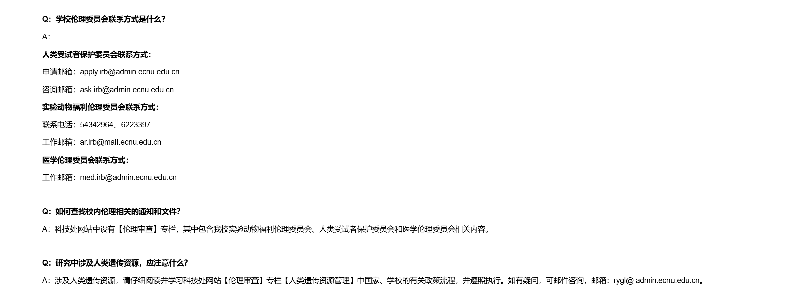
知情同意是一段沟通过程
有效的知情同意通常应说明研究目的、活动内容、时间、可能风险与收益、数据如何使用和保存、是否共享、退出方式、补偿与联系人。语言要让目标人群能够理解，不能只把专业术语塞进一张签字表。存在师生、医患、管理与被管理关系时，还要降低隐性压力，例如由非任课或非考核人员招募，明确拒绝不影响成绩、资源或关系。
未成年人参与研究时，需要根据年龄、理解能力、风险和适用制度判断监护人许可与未成年人同意的组合。参与者同意参加一次问卷，不代表研究者可以无限期保存可识别数据、与其他数据库连接或向第三方公开。每一种后续用途都要回到原同意范围、审批条件和适用法律重新判断。
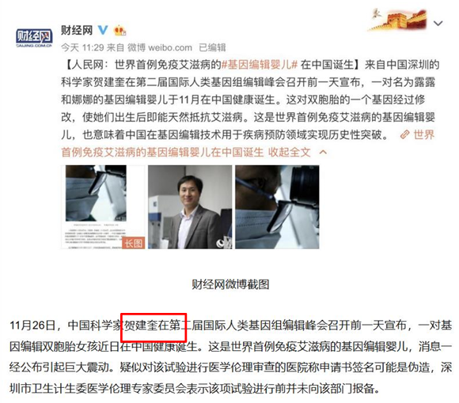
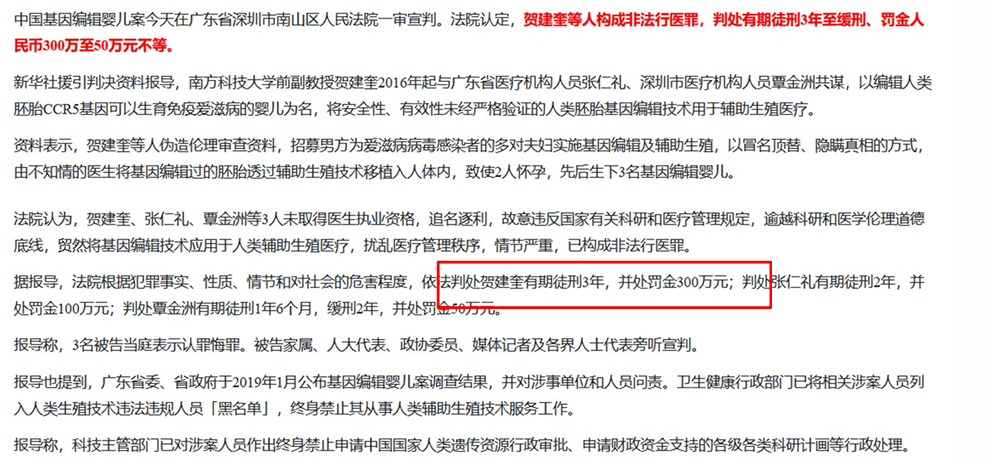
人类基因组编辑案例虽然距离一般教育研究较远，却放大了一个共同原则：研究者不能把“可能做到”直接推导为“可以去做”。研究的社会价值、技术不确定性、参与者风险、代际影响、利益冲突和监督机制必须一并评估。世界卫生组织《人类基因组编辑：建议》
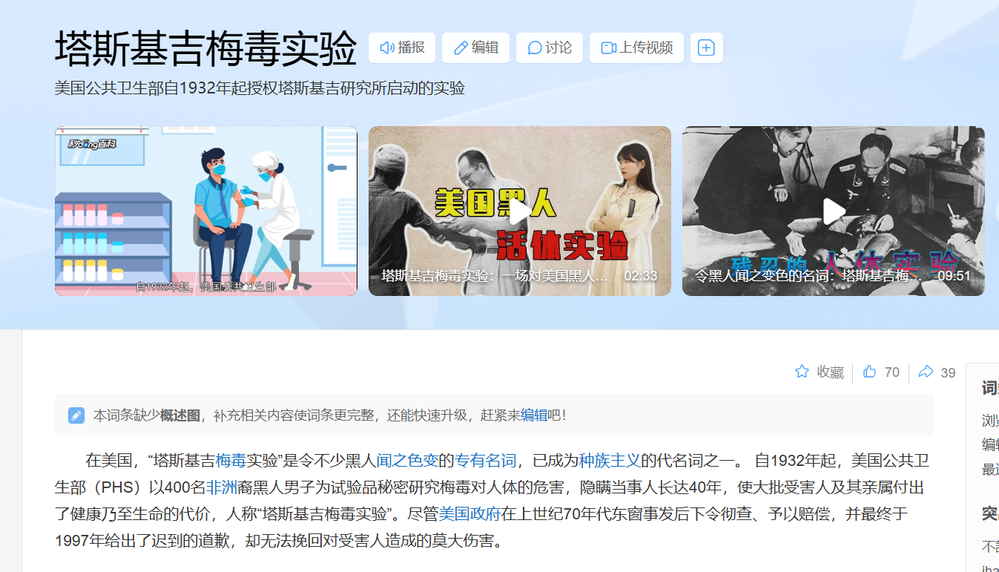
美国疾病控制与预防中心的历史资料显示，该研究始于1932年，共涉及600名黑人男性，其中399人患有梅毒；研究没有取得参与者的知情同意，并在有效治疗已经可用后仍未向参与者提供治疗，直至1972年终止。这里最重要的不是把事件当作遥远的历史错误，而是理解伦理义务会持续存在：新治疗出现、风险认识改变或研究负担增加时，原方案必须重新评估。CDC塔斯基吉研究时间线
个人信息保护要落实到数据生命周期
我国个人信息保护制度强调合法、正当、必要、诚信、目的明确、最小范围、公开透明与安全保障等要求。对教育数据而言，姓名和身份证号固然是个人信息，学号、设备标识、精确时间地点、面部声音、少见经历以及可以与公开资料组合识别个人的变量也可能带来风险。《中华人民共和国个人信息保护法》
| 环节 | 需要回答的问题 | 可执行措施 |
|---|---|---|
| 收集前 | 每个字段是否为研究问题所必需；是否需要伦理审查和单独同意 | 做数据最小化清单；删除“以后也许有用”的字段；确定法理或同意基础 |
| 招募与同意 | 参与是否自愿；退出是否真实可行；弱势群体是否受保护 | 使用易懂说明；分开研究同意与额外共享同意；提供非惩罚性退出渠道 |
| 采集与传输 | 设备、账号和网络是否泄露身份或内容 | 使用批准的平台、加密传输和最少权限；避免个人社交账号传递原始数据 |
| 存储与分析 | 标识符是否必须保留；谁能访问；关联键放在哪里 | 标识信息与研究数据分离；使用编码；记录访问；定期复核权限 |
| 报告与展示 | 小样本、引语、图像或组合特征是否能让人被识别 | 合并稀疏类别；改写非关键细节；取得引语或照片许可；做重识别风险检查 |
| 共享与销毁 | 共享范围是否符合原同意；保存期限是否明确 | 使用数据使用协议；按风险设置访问级别；到期安全删除并保留销毁记录 |
“去掉姓名”不必然等于匿名化。如果研究团队保留一张可以把编号还原为姓名的对应表，这通常是编码化或假名化数据，而不是不可逆匿名数据。公开可访问的社交媒体或论坛内容也不自动意味着可以无条件抓取、引用和发布；仍需考虑平台规则、用户的合理隐私期待、群体伤害和原话被搜索回个人的风险。
2023年发布的生命科学和医学研究伦理审查办法强调尊重、有利不伤害、公正和隐私保护等原则。其直接适用范围有明确界定，不能机械地说所有教育研究都由该办法管辖；教育研究者应结合本机构、学科、数据类型和研究对象核对适用制度。《涉及人的生命科学和医学研究伦理审查办法》
13.8 从历史案例看失范行为的系统条件
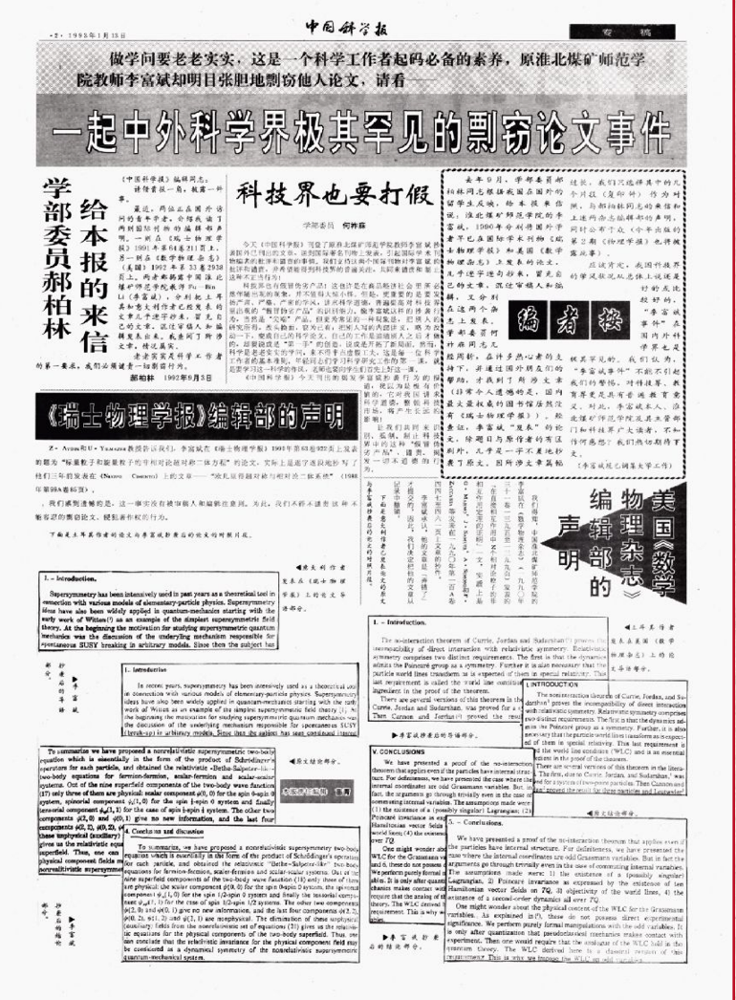
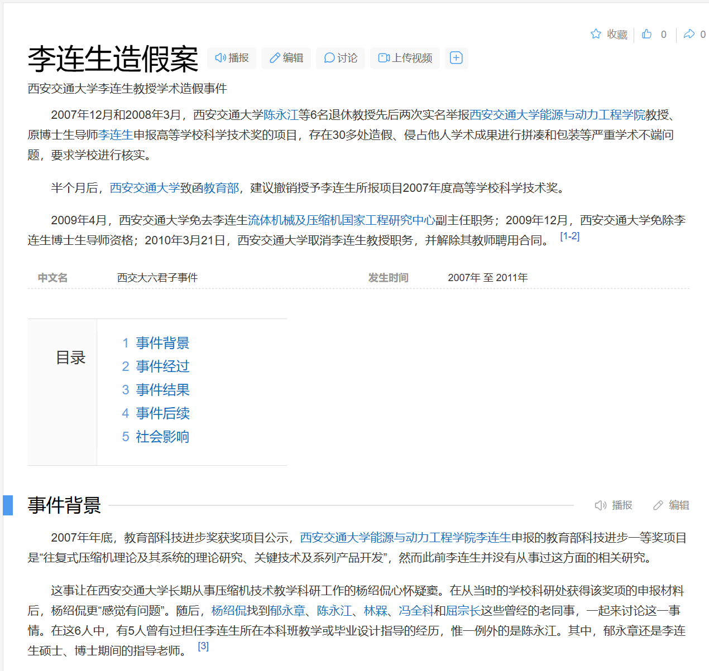
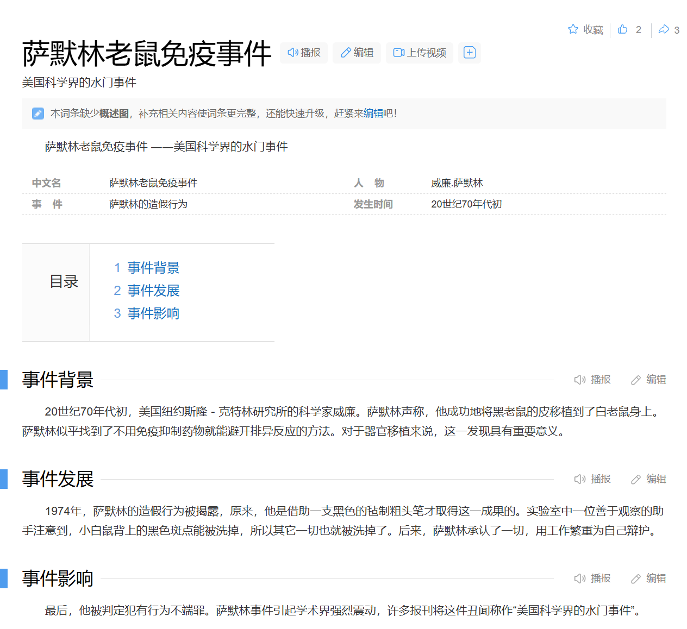
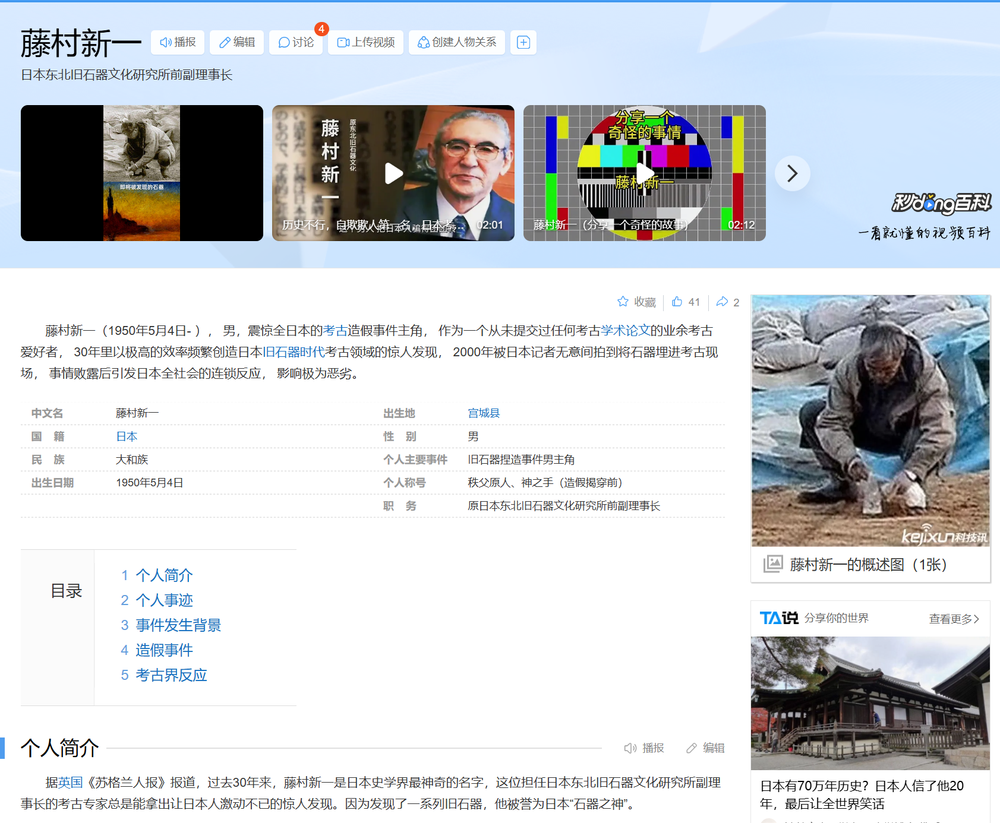
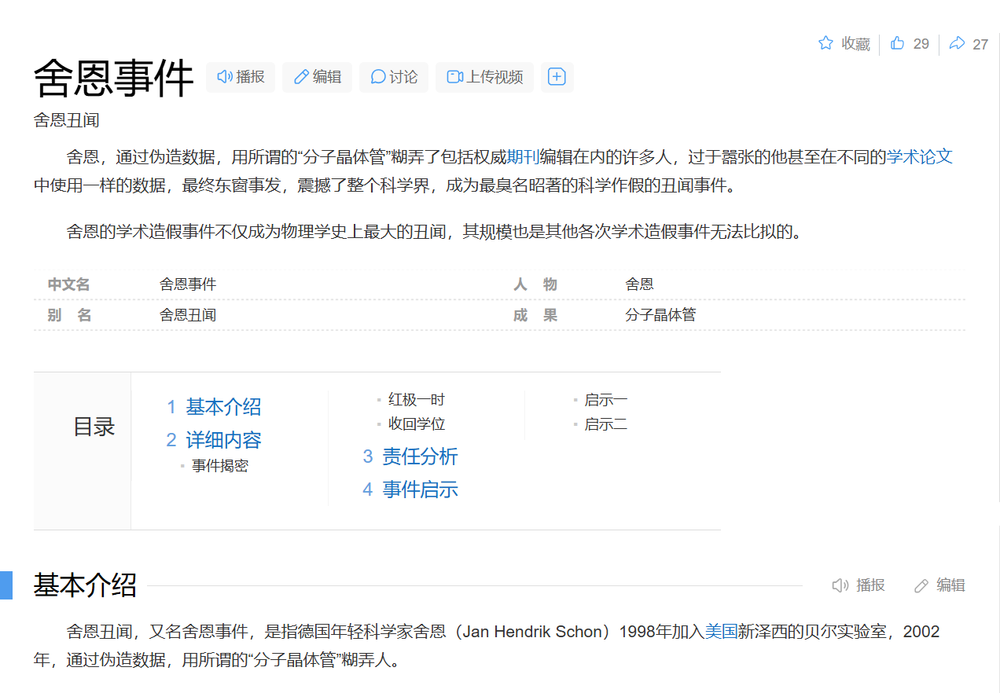
历史案例不应只被讲成“某个人品行不端”。个体必须为自己的行为负责，但组织环境也会影响问题被预防、发现和纠正的可能性。常见系统风险包括：只奖励阳性和新奇结果；团队权力差距过大，年轻成员无法质疑；原始数据由单人控制；代码和图像没有复核；作者不了解自己署名成果的关键环节；调查与业务部门存在利益冲突。
相应的治理也不能只依赖口号。更有效的安排包括：预先明确数据与作者责任；关键分析由另一名成员复现；图像保留原文件和处理记录；重要结论至少有两类证据交叉支持；设置安全的内部咨询和报告渠道；把诚实的零结果、纠错和高质量数据管理纳入评价。科研诚信文化的标志不是“从来没有错误”，而是错误能够被发现、被讨论并被纠正。
13.9 生成式人工智能：可以辅助，不能转移责任
先按研究阶段判断风险
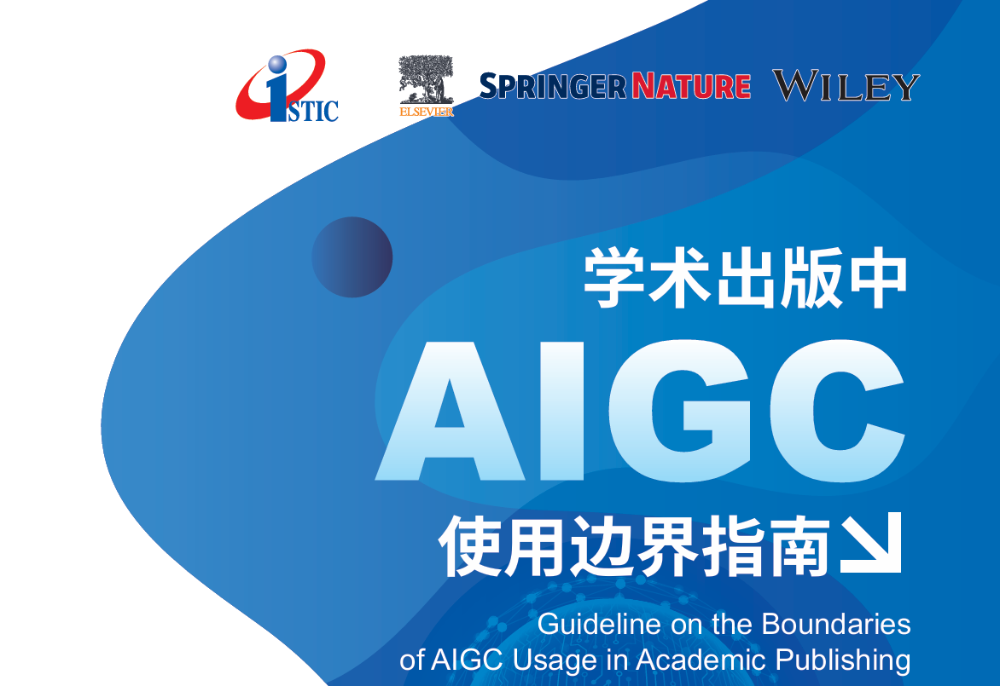
生成式人工智能可以帮助形成检索词、解释代码报错、改进语言表达或整理结构，但它也可能生成不存在的文献、把过时信息写成现行规则、重复训练材料中的偏见、泄露输入的未公开数据，或给出看似流畅却无法复核的分析。判断是否适合使用，不能只看输出“像不像正确答案”，而要看该任务能否由作者独立验证。
| 阶段 | 可考虑的辅助方式 | 主要风险 | 最低控制要求 |
|---|---|---|---|
| 选题与检索 | 扩展关键词、解释概念差异、形成待检索问题 | 虚构文献、遗漏反例、以旧信息代替当前证据 | 回到数据库和原文检索；逐条核验题名、作者、年份与标识符 |
| 研究设计 | 帮助检查表述或列出可能变量 | 把通用建议当作适用方案，忽视本地情境与伦理风险 | 由研究者说明理论依据；让学科专家和伦理程序把关 |
| 编码与分析 | 生成代码草案、解释函数、协助调试 | 代码能运行但逻辑错误；上传敏感数据；选择性分析 | 使用最小或模拟数据；逐行审查；以独立计算和测试验证结果 |
| 图像与可视化 | 生成版式建议、辅助绘图代码 | 合成图像被误当研究证据；修改图像改变数据含义 | 研究性图像必须来自真实数据；保留来源、代码和处理记录 |
| 写作与翻译 | 改善可读性、检查结构和语法 | 代替作者形成论证；措辞掩盖不确定性；产生抄袭或不实引文 | 作者逐句核验并重写；不让工具生成自己无法辩护的结论 |
| 投稿与评审 | 帮助检查清单或非保密文本的语言 | 泄露未发表稿件、评审材料或个人信息 | 核对保密义务和平台数据政策；按期刊要求披露使用情况 |
人工智能不能成为作者
作者不仅是文字生产者，还必须能够同意发表、披露利益冲突、回答质疑、提供材料并对错误承担责任。人工智能系统不能履行这些义务，因此不应列为作者。ICMJE现行建议要求作者披露使用情况，并强调人类作者须审查人工智能生成内容、核验引用、避免剽窃并对最终成果负责；人工智能输出也不应被当作可靠的原始证据。ICMJE关于作者使用人工智能的建议
披露不能只写“使用了AI”。一份有用的说明应包括工具与版本、使用日期、用途、处理的材料类型、人工核验方式以及人工智能没有承担的环节。例如：
本研究于2026年6月使用某生成式人工智能工具的某版本，对作者已完成的中文摘要进行语言精炼，并协助检查R代码中的语法错误。未向工具输入可识别的参与者数据或未公开访谈文本。所有修改均由作者逐项核对，统计结果通过原始脚本重新运行验证；研究问题、分析决策、结果解释与结论均由作者完成并承担责任。
披露格式应服从目标期刊、机构或课程的要求。某些场景把使用说明放在方法、致谢或附录中；某些作业还要求保留提示词与输出记录。最稳妥的做法是在使用当时就建立日志，而不是投稿时凭记忆补写。
“引用工具”与“披露使用”是两个问题
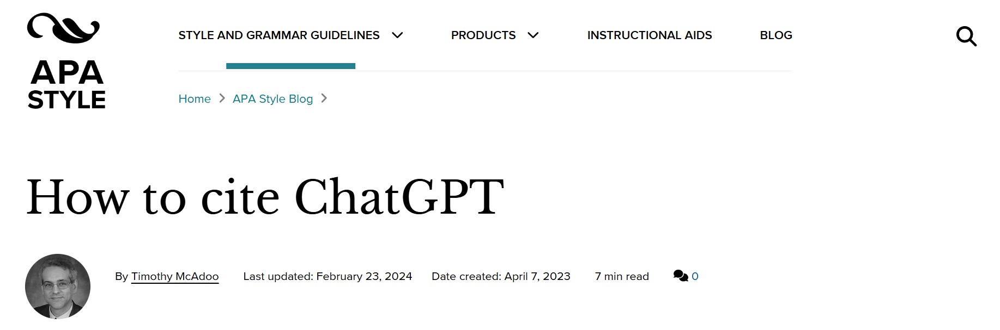
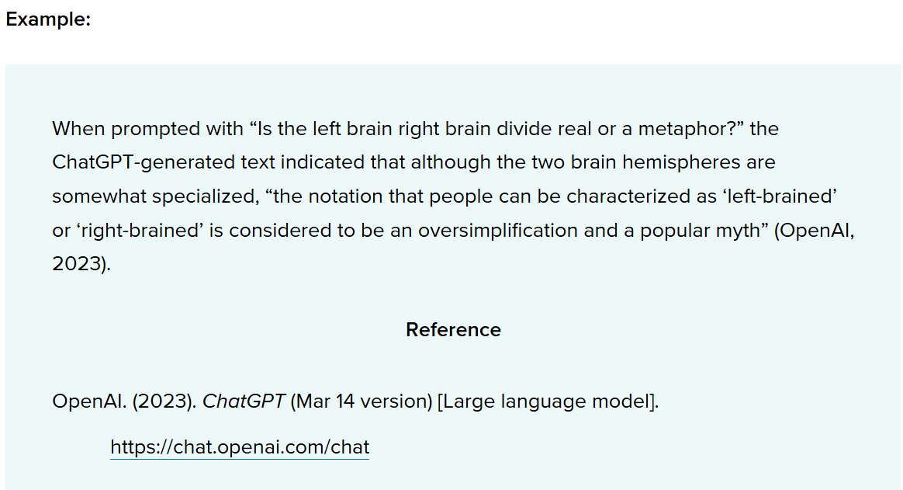
当研究对象就是某个模型的输出，或读者需要识别所用软件时，工具引用有助于复核；当人工智能只是语言或代码辅助时，更关键的往往是方法透明。两者都不能把人工智能回答当作事实来源。事实、理论、政策和统计数据仍应引用相应的原始文献或权威资料。APA Style关于如何引用ChatGPT的说明
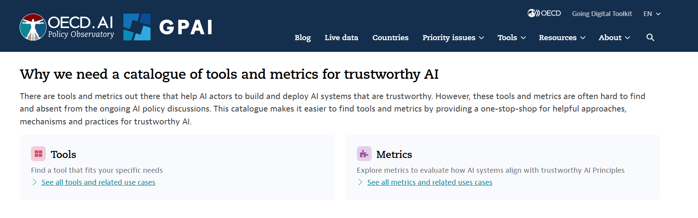
13.10 检测工具提供线索，不替人作出结论
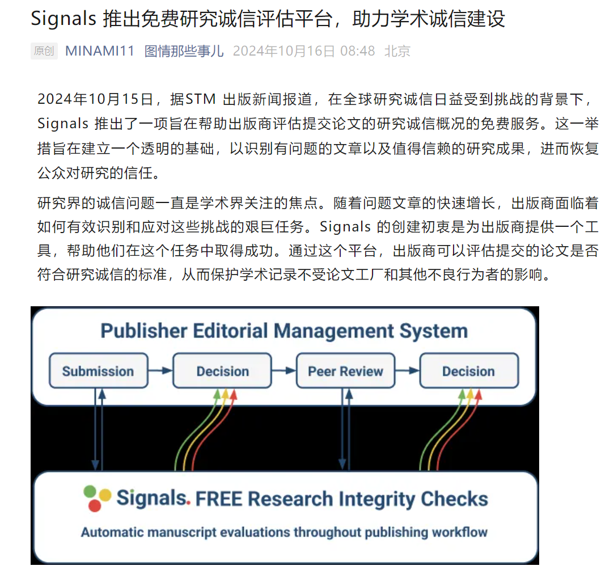
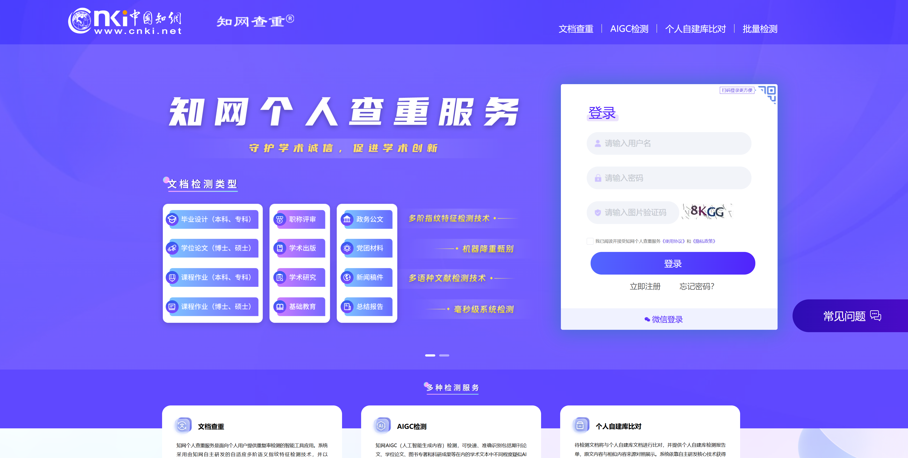
文本相似率不等于剽窃率。规范引用、参考文献、通用术语和方法描述也会形成匹配；低相似率则可能来自未收录来源、观点剽窃、跨语言改写或图像与数据问题。Turnitin对自身报告的说明同样强调，相似度只表示与数据库材料相匹配的比例，不能自动判定是否发生剽窃。Turnitin关于相似度分数的说明
完整的核查至少包括四步：先定位具体匹配或异常；再打开原始来源并比较语义、结构和引用方式；随后结合作者记录判断形成过程；最后依据适用规则和正当程序作出结论。人工智能文本检测也存在误判，尤其不应只凭一个概率分数处罚学生或研究者。检测结果适合触发人工复核，不适合作为单一证据。
13.11 发现问题之后：保存证据、控制影响、及时纠正
一个可执行的纠错流程
研究者发现自己的数据、代码、图表或引用可能出错时，可以按以下顺序处理：
- 立即停止继续传播可能有误的版本，不删除、不覆盖原始文件。
- 复制并只读保存相关数据、脚本、输出、往来记录和时间信息，建立问题日志。
- 复现问题，区分局部排版错误、分析错误、伦理或隐私事件，以及可能涉及失信的行为。
- 评估影响范围：哪些表图、结论、参与者、合作方、数据库或已经提交的成果受到影响。
- 按团队分工通知项目负责人、数据保护或伦理机构；稿件已提交或发表时，及时联系编辑部。
- 提出纠正方案并留下版本差异。需要更正、撤回或撤稿时，说明原因和受影响内容。
- 修补流程缺口，例如增加独立复核、权限控制、脚本测试或同意范围检查。
如果问题涉及团队成员，不应自行公开指控或私自“查手机、删文件”。应保护现有证据，通过本单位正式咨询、举报和调查渠道处理，并遵守保密、回避和程序正义要求。举报人的善意不等于结论自动成立，被举报人也有陈述和申辩权；公正程序是科研诚信的一部分。
从“不要被抓”转向“让研究值得信任”
一项值得信任的研究，不要求研究者永远不犯错，而要求研究问题与数据来源相符，分析决策有记录，引用和贡献得到承认，参与者权益得到保护，工具使用得到核验，发现错误后能够及时纠正。诚信因此不是研究之外的道德标签，而是研究质量本身。
用研究档案完成全书最后一次复核
从第一章的信息需求到本章的规范与伦理，全书各章最终汇入同一份研究档案。它不必是一个庞大系统，可以是具有稳定目录、文件命名、版本记录和访问权限的项目文件夹。提交作业、论文或报告前，应由研究者本人逐项确认下列材料真实存在且能够打开；若某项不适用，也应说明理由，而不是留下一处无法解释的空白。
| 模块 | 最低保留材料 | 最终核验问题 |
|---|---|---|
| 问题与方案 | 研究问题、概念定义、方案版本和变更记录 | 当前结论是否仍对应最初或经记录修订的问题 |
| 检索与综述 | 检索日志、去重题录、筛选理由、阅读笔记 | 关键主张能否回到实际阅读的原文和页码 |
| 开放与权利 | 来源、版本、许可证、访问条件和授权记录 | 下载、引用、改编和共享是否符合适用条件 |
| 数据获取 | 原始数据、元数据、数据字典、同意或审批材料 | 数据来自哪里，一行和一列分别代表什么 |
| 清洗与管理 | 只读原始层、清洗脚本或日志、异常与缺失处理记录 | 每项改动是否可追溯，是否误删真实观察 |
| 分析与可视化 | 可运行代码、软件与版本、输出、图表源文件 | 数字能否重新计算，图表是否忠实反映数据与不确定性 |
| 作者与贡献 | 贡献记录、署名决定、利益冲突和致谢 | 署名是否与实质贡献和责任一致 |
| 人工智能使用 | 工具、版本、日期、用途、输入边界和人工核验记录 | 是否输入敏感材料，生成内容是否逐项验证并按要求披露 |
| 发布与归档 | 提交版本、补充材料、数据可用性声明、更正计划 | 读者能否识别最终版本，发现错误后如何联系和纠正 |
本章小结
学术规范把研究主张与证据、贡献和责任连接起来。常见学术不端包括剽窃、伪造、篡改、不当署名、一稿多投、重复发表、违背研究伦理及其他破坏学术记录与评价公平的行为。判断具体问题时，要区分诚实错误、学术争议、更正、撤稿与经程序认定的失信行为。
引用应当让读者回到来源，署名应当反映实质贡献和责任，研究过程应保留从申请、采集、清洗、分析到发表的证据链。涉及人的研究要在实施前判断审查要求，并将知情同意、风险最小化、隐私保护和公平原则落实到数据生命周期。生成式人工智能可以提供辅助，但不能成为作者、替代原始证据或转移人类责任；其用途、输入和核验方式应按适用规则披露。相似性和风险检测工具只能提供线索，不能代替人工核查和正当程序。
思考与练习
- 一篇已经发表的论文因统计代码中的诚实错误导致主要结论不成立。作者发现后应当采取哪些步骤？为什么“主动撤稿”和“学术不端”不能直接画等号？
- 某研究生把访谈录音上传到公共生成式人工智能平台，请工具生成逐字稿和主题。请从知情同意、个人信息、平台条款、研究保密和分析责任五个方面识别风险，并设计替代流程。
- 某团队使用同一批学生问卷发表两篇论文。请设计一个判断表，区分“合理回答不同问题”与“隐瞒重叠的重复发表”。
- 为一个三人研究小组建立贡献记录。至少覆盖概念化、方法、数据获取、数据整理、分析、可视化、初稿写作、审阅和项目管理，并说明作者顺序如何协商。
- 选择一份公开的相似性检测报告示例。不要只看总百分比，逐条区分规范引用、常用表述、缺少引号、转述不足和可能的来源占用，并写出人工判断依据。
- 以“大学生使用学习平台的行为与学业投入关系”为题，拟定一份数据伦理清单，说明最小必要字段、招募与同意方式、退出机制、编码化方案、访问权限、保存期限和结果展示中的重识别风险。
- 选取本章一个历史案例，从个体行为、团队管理、机构制度和学术评价四个层次分析问题为什么持续存在，并提出至少三项可执行的预防措施。
- 为自己近期完成的一项作业或研究填写一次全流程诚信检查：文献是否实际阅读，数据是否可追溯，分析是否可复现，图表是否忠实，署名或致谢是否恰当，人工智能使用是否需要披露。把发现的问题和修正动作记录下来。